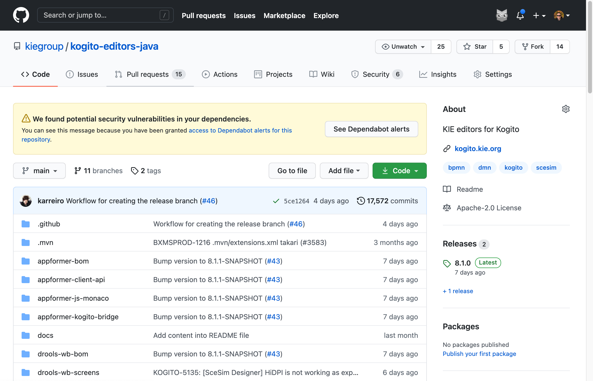
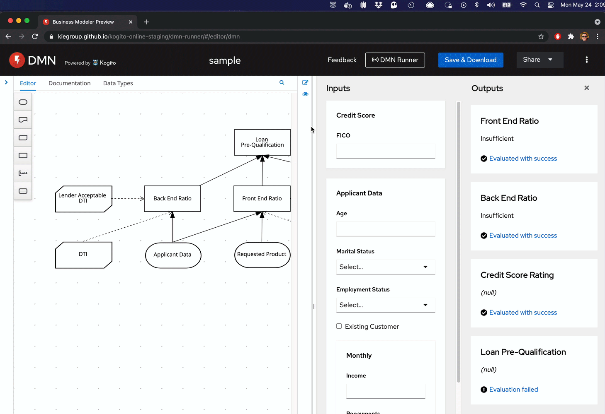
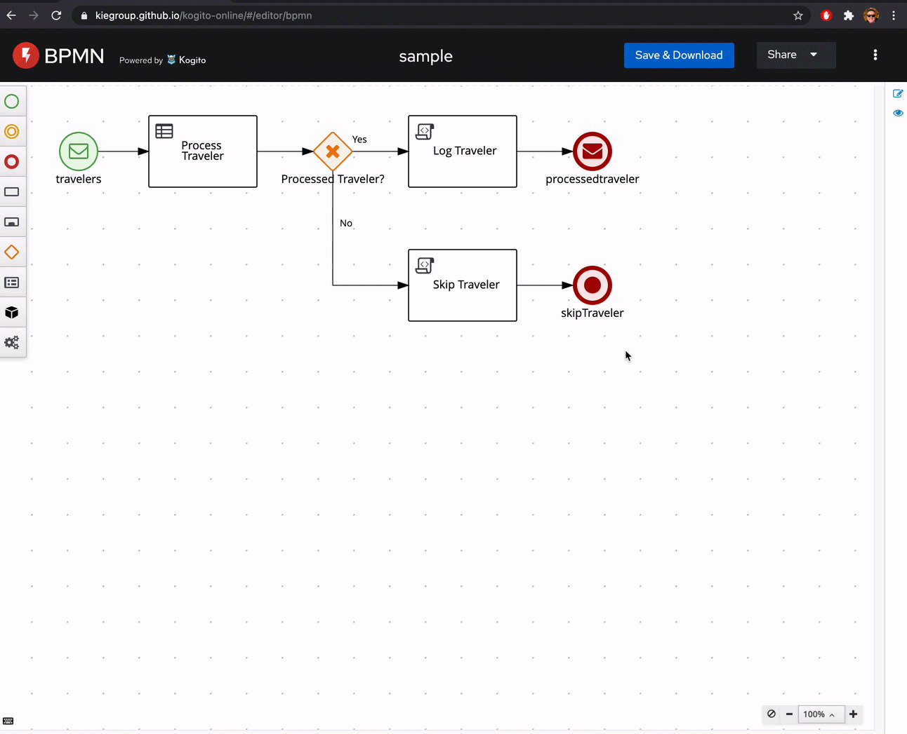
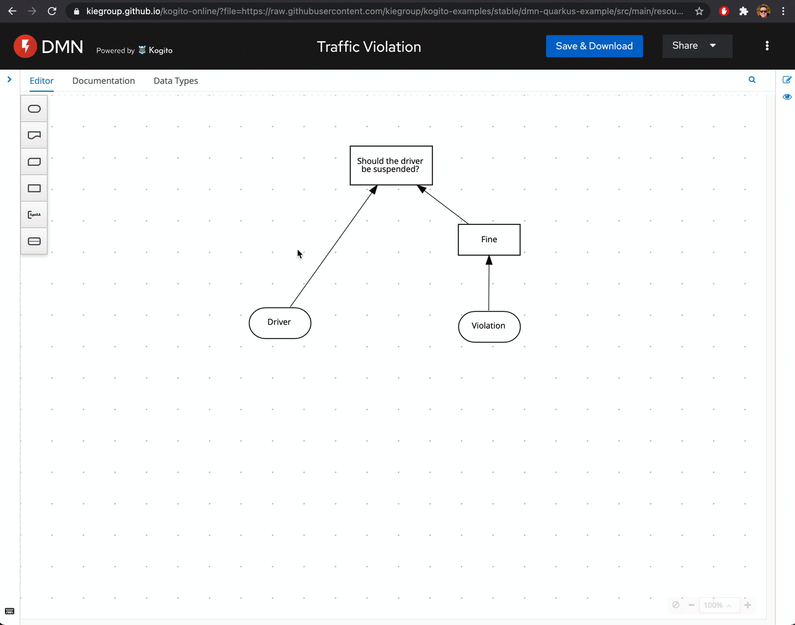

Kogito Tooling 0.10.0 Released!
We have just launched a fresh new Kogito Tooling release! 🎉 On the 0.10.0 release, we made a lot of improvements and bug fixes. We are also happy to announce that this release is the first based on a streamlined codebase of our editors.
This post will give a quick overview of this release. I hope you enjoy it!
Streamline Editors Codebase (fork from BC)
Historically, Kogito Tooling editors are inherited from the Business Central codebase. Until this release, both Kogito and Business central shared the same codebase, which proved to be a smart decision because it allowed us a huge head start on the Kogito Tooling initiative.
However, this shared codebase also means that Kogito Editors has included on its distribution many Business Central features that don’t make sense to the Kogito era, especially the ones related to Errai and AppFormer framework.
In practice, this means that the Kogito Editors used to carry many unused features from Business Central, unnecessarily increasing the bundle size. Also, sharing codebases didn’t provide the ideal developer experience because it requires developers to still work with the big Business Central codebase.
As much as we tried to remove unnecessary bits for each distribution, the code has become very complex over time, making it harder for new features to land or even bugs to be fixed.
For this reason, we decided to start a new development stream for our BPMN, DMN, and Scenario Simulator editors called Kogito Editors, freeing the way for Editors to continue evolving on both streams separately (Kogito and BC) without carrying the weight of the other.

All this exciting work landed in the 0.10.0 release, but what does this mean in practice?
- 50% smaller VS Code and Chrome Extensions, and Standalone Editors, speeding up a lot the loading time and reducing Editors footprint;
- Smaller bundle for both BPMN (29.3 MB to 12.3 MB) and DMN (28.4 MB to 12 MB);
- The compilation time of the Editors reduced by 70%, making our team a lot faster to deliver new features and fix bugs! 🚀
Augmenting the developer experience with DMN Runner
As you probably already know, on our staging environment, we’ve been exploring ways to augment the developer experience for DMN Authoring (if you are new to this, you can see it in action on KIE Live#31).
Last week, we released a new version of our staging environment, including many tweaks (based on your feedback), bug fixes, and a fresh new native runner.

Reuse Data Types across the BPMN process
The motivation behind this work is to improve the user experience in process authoring. In this version, we introduced a mechanism to make Data Types available for being reused across other process elements. Let’s see it in action:

All data types options will be populated from existing process definition types and any other data type created during your BPMN authoring with this new feature.
DMN Data Types – Add popover for showing data types fields in the data types tab
We also added a cool popover for showing data types fields in the data types tab:

New Features, fixed issues, and improvements
We also made some new features, a lot of refactorings and improvements, with highlights to:
- KOGITO-4530 – [DMN Designer] Boxed Expressions – Decision Tables – HiDPI is not working as expected
- KOGITO-4868 – There is an additional scrollbar around the editor when it shouldn’t (SceSim only)
- KOGITO-4914 – The SVG icon is broken on vscode-insiders
- KOGITO-4954 – [Test Scenario] In some conditions Tabs disappear
- KOGITO-5012 – VSCode IT tests are not showing test output in console
- KOGITO-5068 – Online DMN Editor won’t load after several tabs are opened
- KOGITO-4872 – SceSim editor needs an ErrorPage for when
setContentfails - KOGITO-5018 – Create integration test for open from source in online editor package
Further Reading/Watching
We had some excellent blog posts on Kie Blog that I recommend you read:
- Simplest Custom Tasks in Kogito, by Kirill Gaevskii;
- Add Prometheus Datasets for Authoring Dashboards, by Manaswini Das;
- DashBuilder: Getting Started Guide, by William Siqueira;
- Add CSV Datasets for Authoring Dashboards, by Manaswini Das;
- Kafka Monitoring Dashboards with Business Central, by William Siqueira;
Thank you to everyone involved!
I would like to thank everyone involved with this release, from the excellent KIE Tooling Engineers to the lifesavers QEs and the UX people that help us look awesome!

{kind=link}
{kind=link}
{kind=link}
{kind=link}